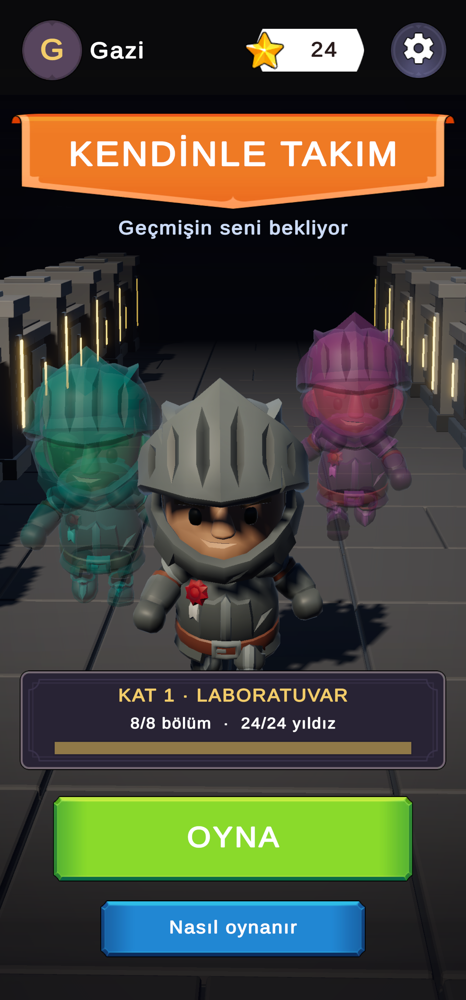

Hat-0
Gece hattının şoförüsün. Her durakta bir yolcu biner. Bazıları pek yolcuya benzemiyor. Dikkatli bak; bir şey yanlışsa kapıyı açma.
Steam sayfası yakında

Clone Runner
Zaman Kulesi'nde stajyerin ilk günü. Kırmızı düğmeye dokundun, kule kilitlendi. Her denemen geride bir yankı bırakır: yankın butona basar, kapıdan sen geçersin.


Oynanış videoları yakında.
25.10 — Clone Runner: Kat 2, orman bölümleri ve platformlar.
23.10 — Clone Runner: giriş sinematiği. Stajyer kırmızı düğmeye dokundu.
22.10 — Clone Runner: ilk oynanabilir prototip.
20.10 — Hat-0: çekirdek döngü. Yolcular binmeye başladı.
█
İçindekiler:
- logo/ SVG, PNG
- ekran_goruntuleri/ her oyun için
- bilgi_foyu.pdf
- fragmanlar/
Şimdilik basın talepleri için e-posta atın.
Mmmm Games
Dört kişiyiz ve hepimizin adı M ile başlıyor, stüdyonun adı da oradan: dört M, dört "mmm". PC ve mobil için oyun yapıyoruz. Unity ile çalışıyoruz; modelleri Blender'da kendimiz yapıyoruz.
Sevdiğimiz şey: tek cümleyle anlatılabilen, ama oynadıkça tuhaflaşan fikirler.
Erişim reddedildi.
Bu klasör henüz kilitli. İpucu: ışıklar yeni bir dünyada yanacak.
✗ kirmizi_dugme_v1 — herkes bastı
✗ sonsuz_koridor — gerçekten sonsuzdu
✗ klon_dans_modu — fazla eğlenceli
✗ otobus_muzigi.mp3 — yolcular şikâyet etti